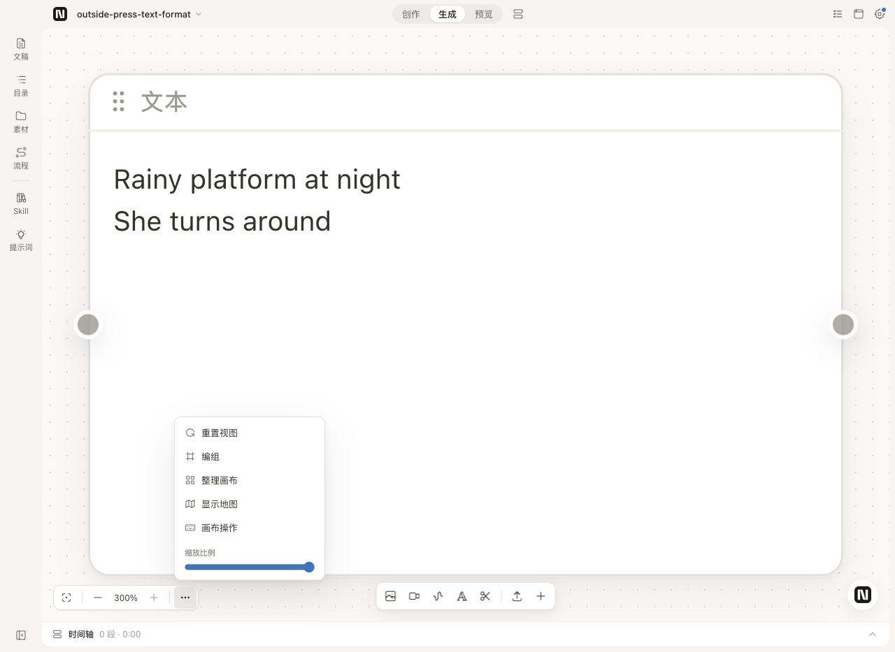
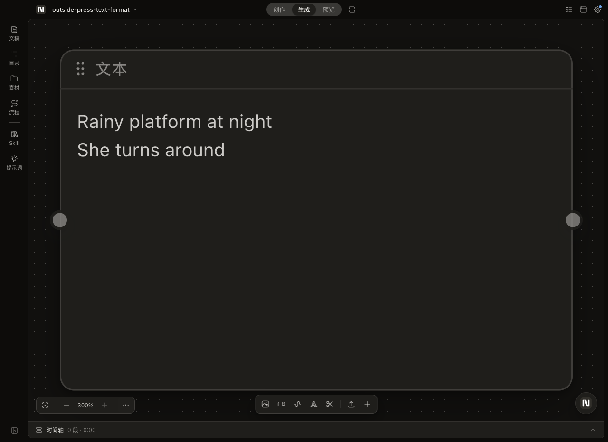
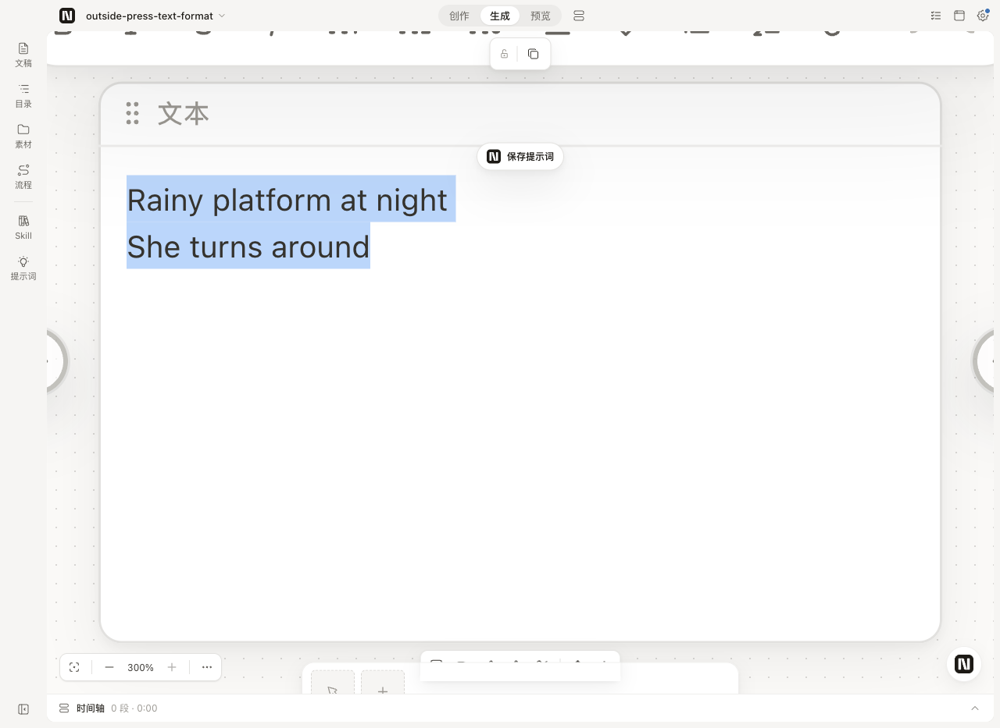
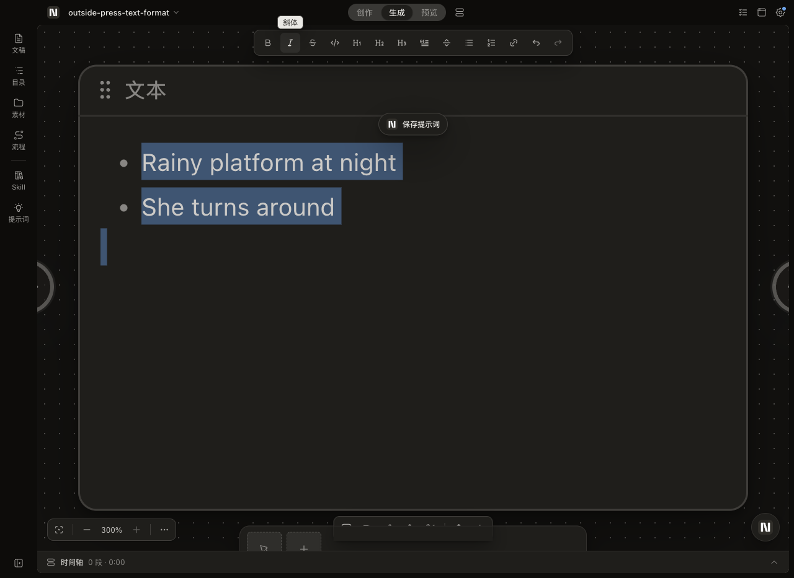
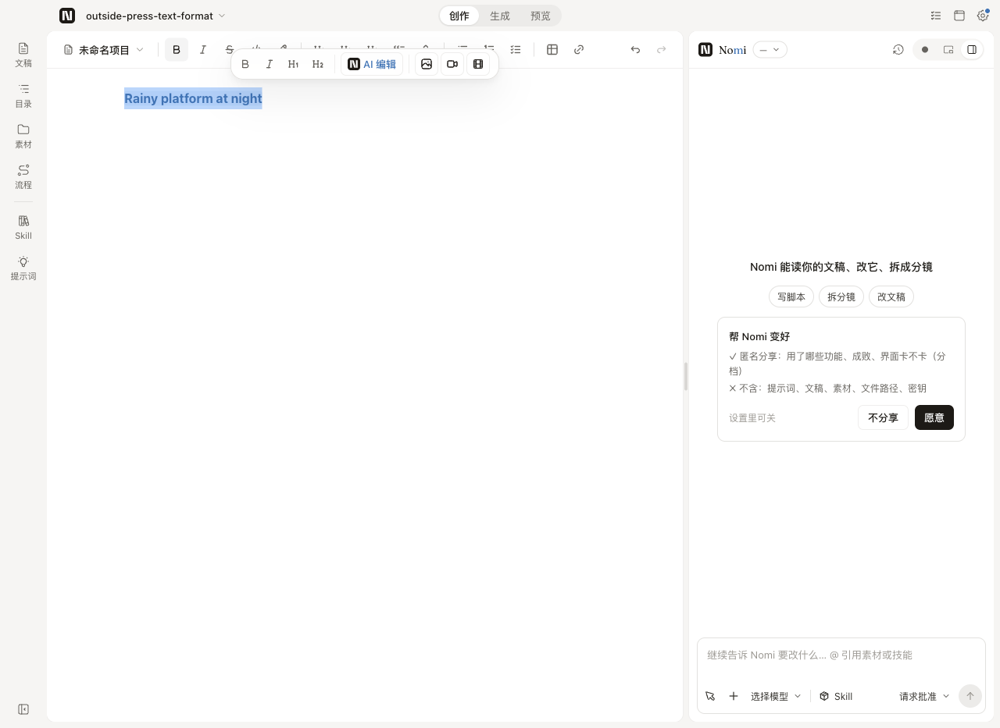
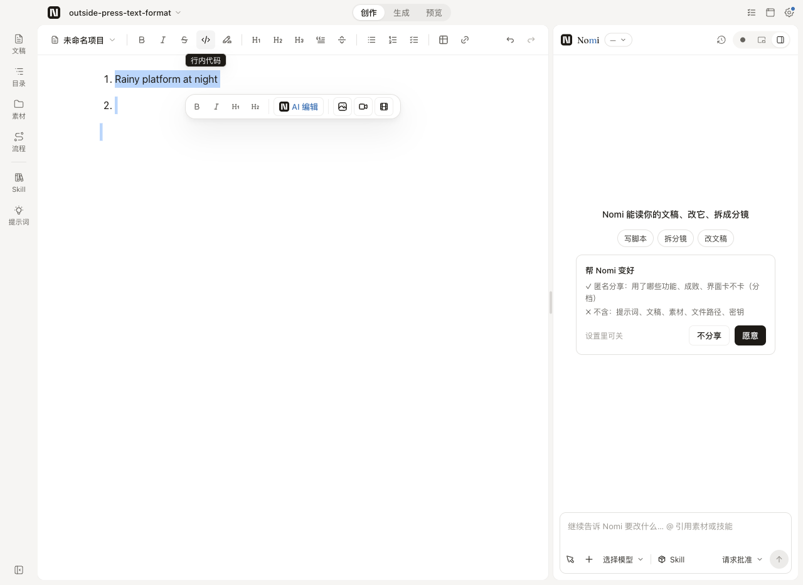
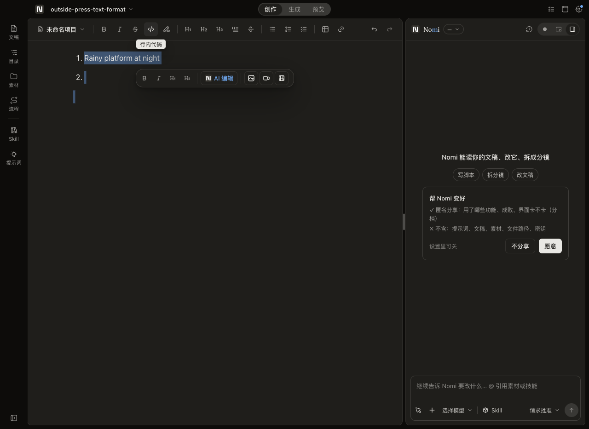
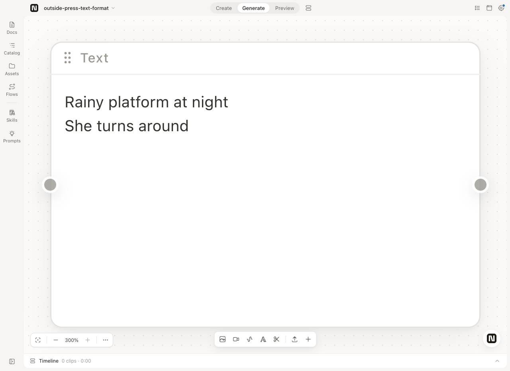
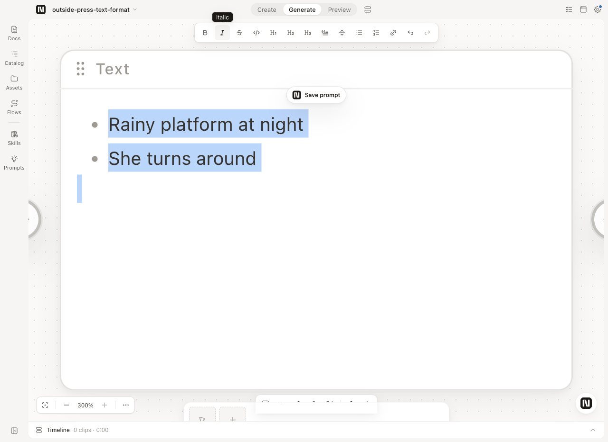
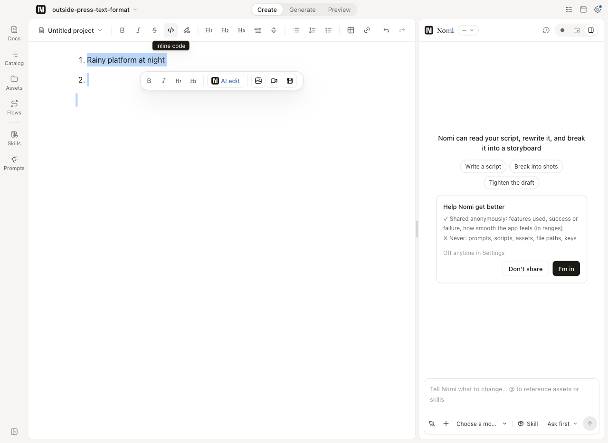

全部画面是生产构建上真机走查的截图，不是样张；修前 = 主线 cad909708，修后 = PR #1299。用户 2026-10-23 亲手试过开发版：「我试过了，可见变化 OK」。
Floating UI useDismiss
点外面默认听 pointerdown、捕获阶段。确认了：「点外面」统一这样听，画布的平移手势吞不掉。
Radix DropdownMenu（hasInteractedOutsideRef）
因点外面关闭时不把焦点还给触发钮，Esc 关闭才还。改了：浮层点空白收起后，「⋯」不再挂着「视图选项」提示。
TipTap 官方：自定义菜单的按下态
React 里 isActive() 不会自动响应，要用 useEditorState 订阅。确认了：格式钮按下态随光标刷新的做法。另参 LibTV：编辑时格式条在节点上方、恒定屏幕尺寸，顶替节点工具条。
没放的：格式钮的种类与顺序不变；选区浮条里重复的四颗格式钮照旧（删不删另议）。


同一条规矩覆盖左栏抽屉、任务中心、素材筛选、帧菜单、预览区菜单等 9 处；按 Esc 关闭照旧把焦点还给触发钮。


编辑时格式条顶替节点上方的锁 / 复制条（同白板编辑条），点回节点头部它们就回来。



按下态：光标在粗体里「加粗」就有设计系统 Pressed 底色，键盘取消后跟着弹起；选区整段滚出视野时浮条隐藏，滚回来再出。



窄窗、Windows 没跑，PR 里记作未验证。